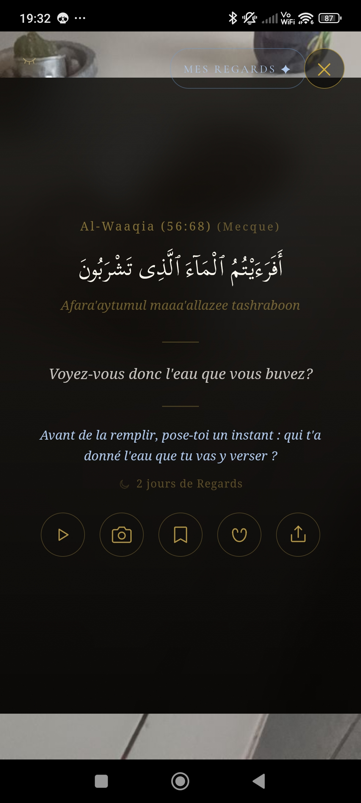
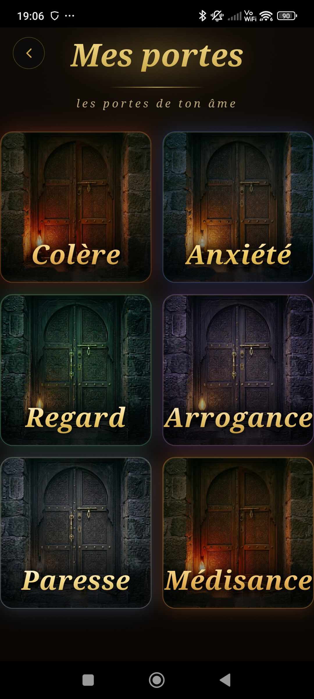
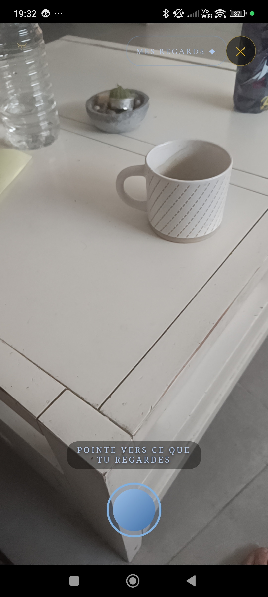
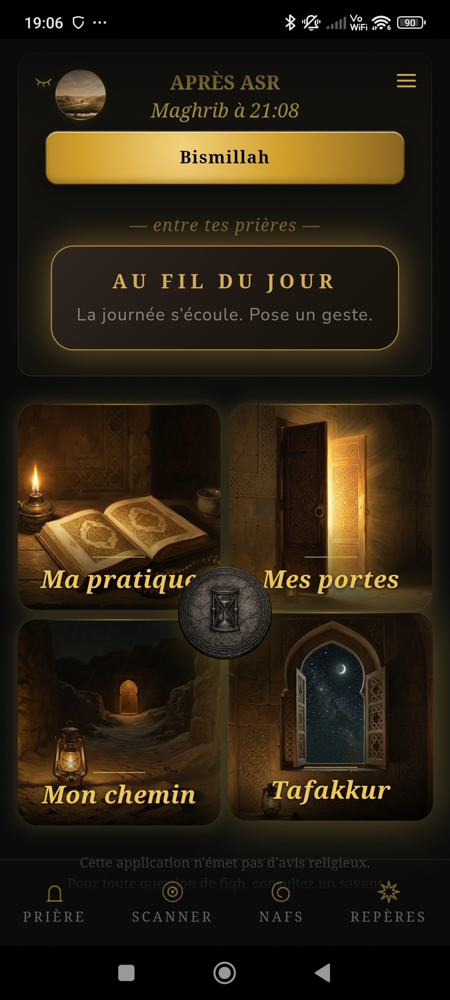

« Les actes ne valent que par leurs intentions. »
Transforme chaque geste du quotidien en acte sacré — horaires de prière, invocations, verset du Coran révélé par ta caméra, et bien plus.

Pointe ta caméra vers ce qui attire ton regard — une personne, un objet, la nature. Niyyah analyse la scène et t’offre le verset qui lui répond, comme si le Coran te parlait directement de ce que tu vois.

Sept maladies du cœur — colère, arrogance, médisance, paresse, attachement, anxiété, regard — chacune avec un programme de guérison de 7 jours. Textes de Ghazali, Ibn al-Qayyim, Ibn Aṭā Allāh.

Montre ce que tu t’apprêtes à faire — travailler, cuisiner, étudier, sortir. Niyyah te propose l’intention juste, pour que rien dans ta journée ne soit vide de sens.

Niyyah réunit dans une seule application ce que tu faisais sur cinq.
Gratuit. Sans compte. Tout reste sur ton téléphone.
Installer l’applicationOuvre le fichier téléchargé. Si Android demande l’autorisation,
active « Sources inconnues » dans Paramètres → Applications → Accès spéciaux.
L’application s’installe comme n’importe quelle autre app.